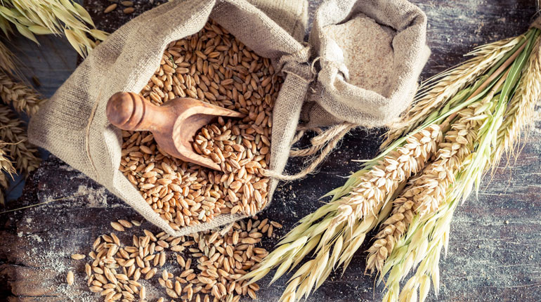

ACERCA DE NOSOTROS
Hace mucho tiempo, una comida abundante era el pilar de la gente de
la sierra. Desde la sierra madre occidental en los bosques nevados
de Durango hasta la sierra madre oriental donde abundan los osos en
Nuevo Leon. Estos robustos antepasados dependían de alimentos reales
con una rica fuente de carbohidratos, proteínas y fibra.
Grupo Korny está destinado a aquellos de nosotros que, como los
viejos pioneros resistentes que exploran la naturaleza salvaje,
necesitamos nutrición, energía y buen sabor para navegar con éxito
la tierra actual.
Estamos orgullosos de ofrecer a nuestros consumidores productos con
granos 100 % enteros para la vida saludable de las personas. Creemos
que tienen el poder de hacer cosas asombrosas, dándole las fuerzas
necesarias para enfrentar la vida actual. Es por eso que solo usamos
los mejores ingredientes para crear las mezclas y sabores más
inspiradores. Nos esforzamos en todo lo posible para que su día sea
mucho mejor. Para difundir un poco más de alegría y felicidad en el
mundo. Reír, sonreír y disfrutar mucho más de la compañía del otro.
Y para nosotros, no hay mejor manera de hacerlo que con una
excelente mezcla de granos y semillas.